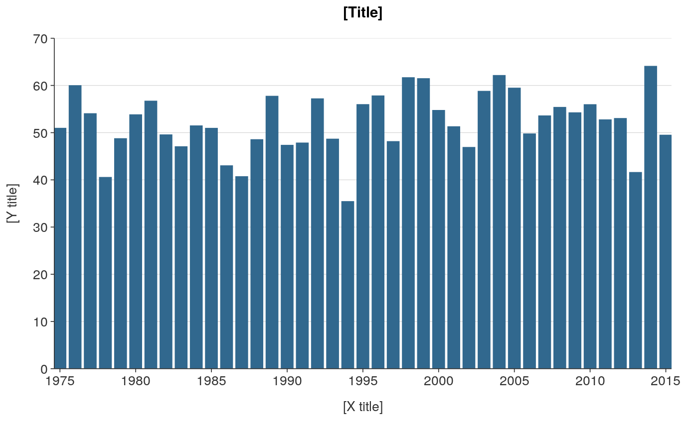

Vertical bar ggplot that is not coloured and not facetted.
ggplot_vbar(data, x_var, y_var, hover_var = NULL, x_scale_date_format = "%Y", y_scale_zero = TRUE, y_scale_trans = "identity", y_scale_labels = waiver(), pal = NULL, width = 0.75, title = "[Title]", subtitle = NULL, x_title = "[X title]", y_title = "[Y title]", caption = NULL, font_family = "Helvetica", font_size_title = NULL, font_size_body = NULL, wrap_title = 70, wrap_subtitle = 80, wrap_x_title = 50, wrap_y_title = 50, wrap_caption = 80, isMobile = FALSE)
| data | A tibble or dataframe. Required input. |
|---|---|
| x_var | Unquoted numeric, date or categorical variable to be on the x axis. Required input. |
| y_var | Unquoted numeric variable to be on the y axis. Required input. |
| hover_var | Unquoted variable to be an additional hover variable for when used inside plotly::ggplotly(). Defaults to NULL. |
| x_scale_date_format | Date format for x axis labels. |
| y_scale_zero | TRUE or FALSE of whether the minimum of the y scale is zero. Defaults to TRUE. |
| y_scale_trans | A string specifying a transformation for the y axis scale, such as "log10" or "sqrt". Defaults to "identity". |
| y_scale_labels | Argument to adjust the format of the y scale labels. |
| pal | Character vector of hex codes. Defaults to NULL, which selects the Stats NZ palette. |
| width | Width of bars. Defaults to 0.75. |
| title | Title string. Defaults to [Title]. |
| subtitle | Subtitle string. Defaults to [Subtitle]. |
| x_title | X axis title string. Defaults to [X title]. |
| y_title | Y axis title string. Defaults to [Y title]. |
| caption | Caption title string. Defaults to NULL. |
| font_family | Font family to use. Defaults to "Helvetica". |
| font_size_title | Font size for the title text. Defaults to 11. |
| font_size_body | Font size for all text other than the title. Defaults to 10. |
| wrap_title | Number of characters to wrap the title to. Defaults to 70. Not applicable where isMobile equals TRUE. |
| wrap_subtitle | Number of characters to wrap the subtitle to. Defaults to 80. Not applicable where isMobile equals TRUE. |
| wrap_x_title | Number of characters to wrap the x title to. Defaults to 50. Not applicable where isMobile equals TRUE. |
| wrap_y_title | Number of characters to wrap the y title to. Defaults to 50. Not applicable where isMobile equals TRUE. |
| wrap_caption | Number of characters to wrap the caption to. Defaults to 80. Not applicable where isMobile equals TRUE. |
| isMobile | Whether the plot is to be displayed on a mobile device. Defaults to FALSE. In a shinyapp, isMobile should be specified as input$isMobile. |
A ggplot object.
plot_data <- dplyr::storms %>% dplyr::group_by(year) %>% dplyr::summarise(average_wind = round(mean(wind), 2))#>plot <- ggplot_vbar(data = plot_data, x_var = year, y_var = average_wind, title = "Average wind speed of Atlantic storms, 1975-2015", x_title = "Year", y_title = "Average maximum sustained wind speed (knots)")#> Warning: Ignoring unknown aesthetics: textplot